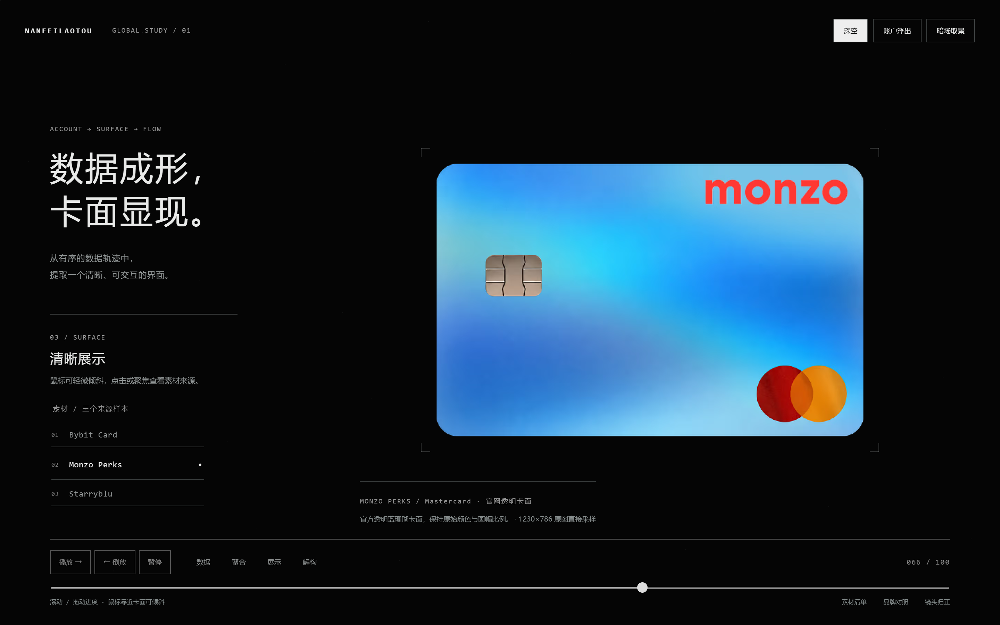
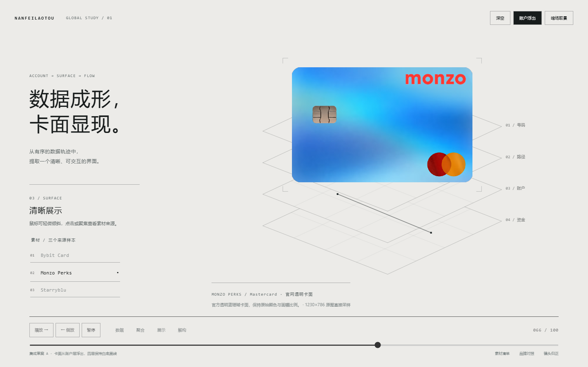
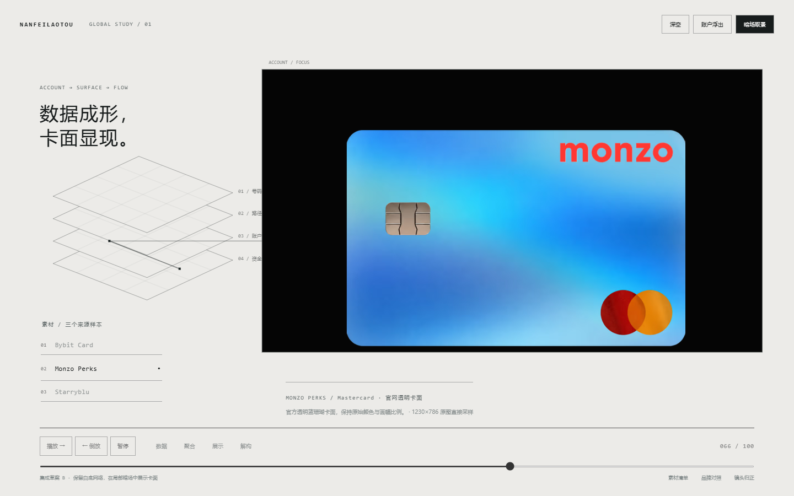
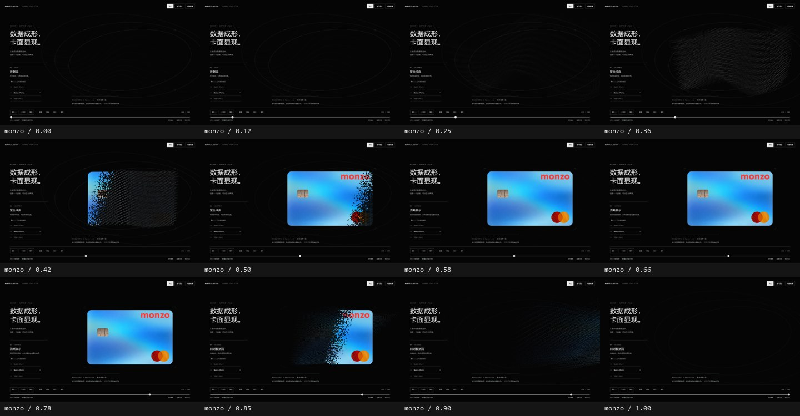
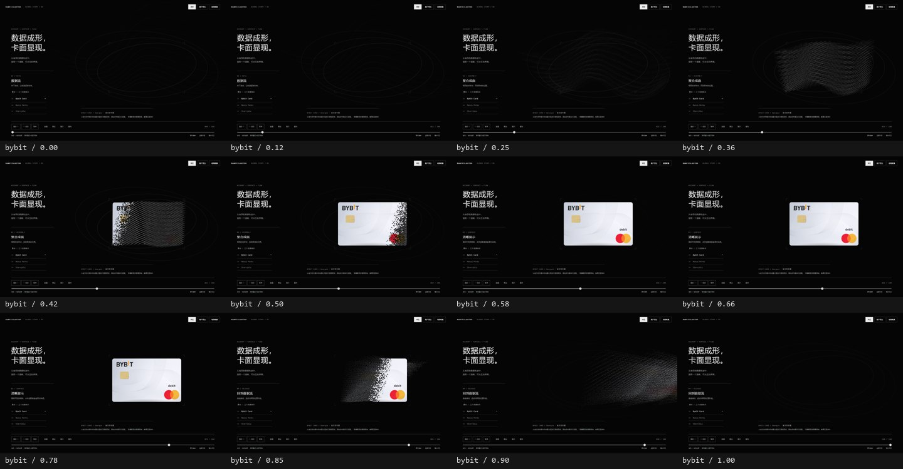
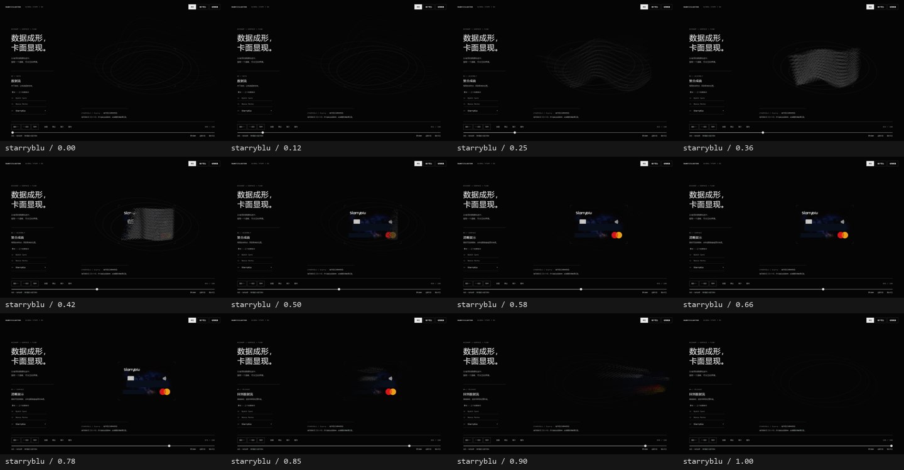
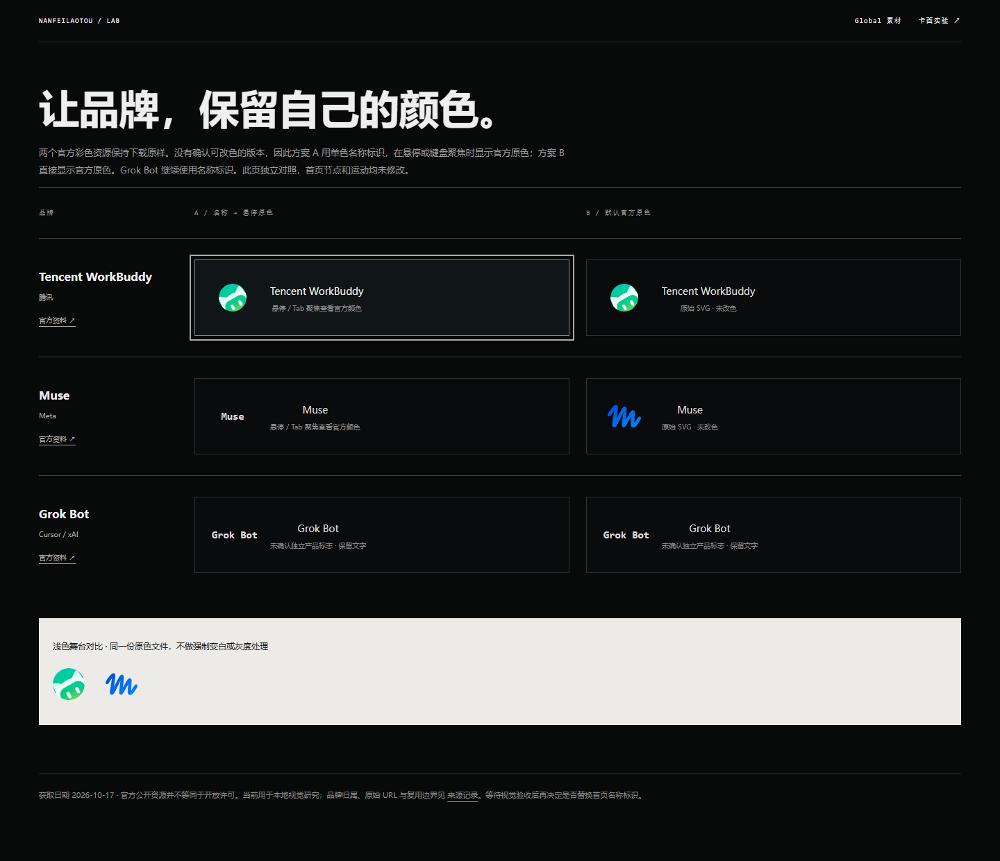
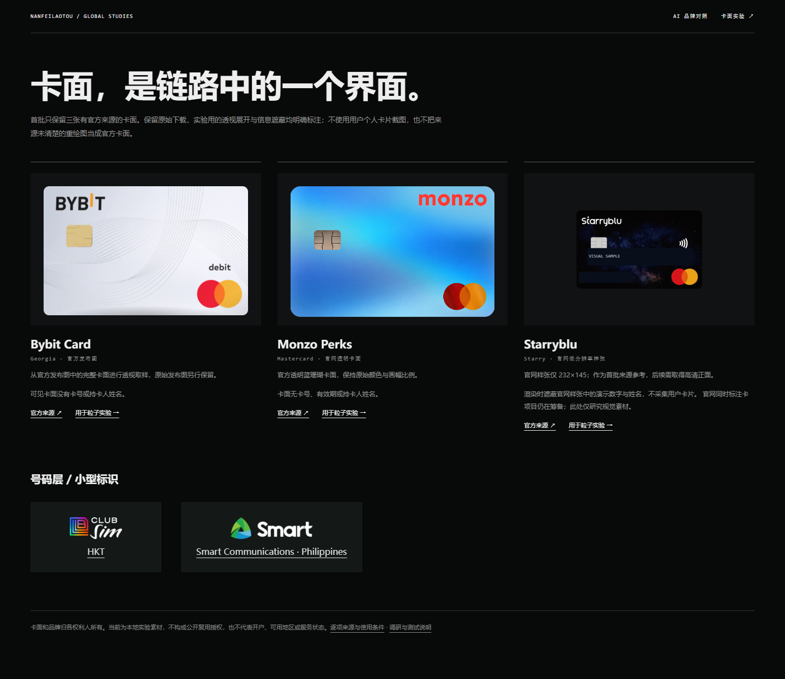

NANFEILAOTOU / GLOBAL STUDY · 2026-10-17
卡面、原色与数字结构。
独立实验验收。已验收首页、四层 Global、Personal、粒子与时间轴保持原样。卡面展示支持正向、反向、暂停与倾斜。
清晰度：直接取样原图
默认 Monzo 原图 1230×786，最大显示 615×393 CSS px，DPR 2 对应完整原始像素。不再经过中间缩图，并修正透视 UV 插值。下图可打开查看原始截图。

Bybit 1600×900 宣传图内的卡面有效宽度只有约 450–500px；限制到 440 CSS px，高清正面仍待补。Starryblu 原图 232×145，明确标为低分辨率样张。两者没有通过 AI 放大冒充高清。
白底四层空间 · 两种独立草案


连续阶段 · 可正反向重现
每张素材记录 12 个进度；反向定位时 WebGL framebuffer 哈希一致。点击下图查看大图。每格标注进度。



品牌与素材
WorkBuddy 与 Muse 保留官方原色。A 为白色名称，悬停 / 聚焦才出现原色；B 默认原色。Grok Bot 未确认独立标志，继续文字。未把原色素材强制变白。来源、使用边界见 素材来源记录。


实际运行
Chromium 153 / Windows / RTX 4080 Laptop / ANGLE D3D11。聚合阶段各采样 150 帧；下列是应用回调成本及 rAF 节奏，不代表所有设备的显示帧率。
| 窗口 | CPU 平均 / p95 | rAF 次数/秒 | 采样长任务 |
|---|---|---|---|
| 1920×1080 | 0.156 / 0.300ms | 238.4 | 0 |
| 1440×900 | 0.176 / 0.300ms | 238.4 | 0 |
| 1366×768 | 0.249 / 0.400ms | 238.4 | 0 |
650ms 静止阶段无新增帧调度或绘制。GPU Draw 各 100 次：点阵平均 0.0195ms，纹理面平均 0.0294ms；该数据不含清屏与浏览器合成。完整 p95、原始样本及资源检查见 JSON。
已检查鼠标、键盘、拖动进度、正反播放、触摸、Resize、DPR 2、减少动态效果、无 WebGL、Context 丢失 / 恢复和 file:// 静态提示。未测试真实手机、Safari、Firefox 与低端 GPU。已有首页通过源文件与素材不变检查，本轮未重复其完整浏览器验收。